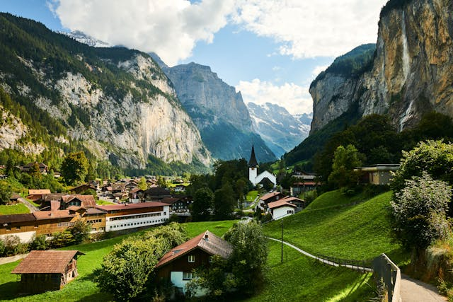

The Quiet Village
At the foot of the mountain rests a peaceful village, wrapped in soft lantern-light. Smoke rises gently from chimneys, and the scent of warm bread drifts through the air. Though small and humble, the village carries stories older than stone.
About the Village
- The villagers are known for their kindness and strong sense of community.
- Every home is made of wood and clay, built carefully by hand.
- A tiny market square sits in the center, where travelers share tales of their journeys.
- Some believe the village was blessed long ago by a mysterious wandering sage.
You Visit the Village
- You enter the village and are greeted by children laughing near a fountain.
- An elder waves you over, offering warm tea and a place to rest.
- You walk the quiet streets, admiring the lanterns hanging from every doorway.
- A gentle hush falls as villagers begin their evening prayers.
- You feel calm and safe, as though the village itself is protecting you.

Go to the Home Page
Go to Green Forest
Go to The Dragon
Go to Mountain Trail